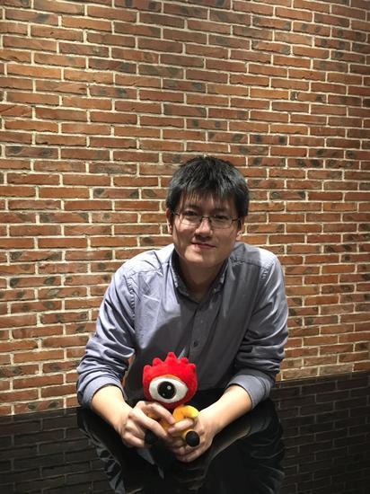

目前很多当红IP都加入了VR直播的形式，VR直播已经成为了不可错过的话题。作为国内领先的虚拟现实及增强现实技术公司，七维科技专注计算机视觉、图形图像、视频处理及人机交互技术，积极探索VR直播技术。与其他VR直播解决方案不同的是，七维科技采用了自研的360°全景视频解决方案，可以在VR直播上叠加AR显示效果。
此外，据七维科技介绍，他们拥有四个“首家”和六个“唯一”，是什么让七维科技有此不同？带着好奇与疑问，笔者对七维科技的CEO殷元江进行了专访，下面是专访内容整理：
新浪VR：七维科技曾对电影《大鱼海棠》的发布会做了一次叠加AR特效的VR直播，是其他VR直播所没有的，是如何做到这种实时叠加特效的直播？
殷元江：可以管直播《大鱼海棠》这种形式叫增强的VR视频，第一次做这种形式是在《音乐风云榜》，这块最早是源自我们几方面产品的一个综合应用，七维这个团队最早是做传统的电视台的视频渲染引擎，那个时候，我们做了一个跨界的事情，把次世代的游戏引擎改成了直播的实时添加特效的系统。做了设计跟踪、空间定位跟踪、摄影机实时的跟踪也包括视频信号的处理叠加、合成抠像，也包括动作捕捉设备的接入，在这里做的相当于一个AR。
新浪VR：关于VR直播，七维科技的核心技术是什么？
殷元江：在14年，我们做了Go！Pano Studio这个产品，解决的是实时缝合拼接，我们有了缝合拼接的算法，衍生出来的是一系列的一个矩阵。首先，是一个软件的核心，能自动标定硬件，可以跟红龙、佳能、索尼等相机相匹配，变成一个全景拍摄的方案，能实时缝合和直播360度立体和180度立体的内容。更强的后续延展出来的能力是Go！Pano vibox，可以实时渲染VR视频、实时叠加特效、实时植入广告和实时直播互动，呈现的是AR的效果。
新浪VR：七维科技现在的VR直播技术，它本身的技术壁垒在哪里？
殷元江：能做VR直播技术算法的人很多，但是整个流程是，相机需要提取特征点，能在特征点提取之下标定出它的内参和外参（内参指它本身的Fov、畸变等；外参指它在空间里的位置）。我们在标定的环节有自己一整套的算法，可以做到云端标定，也支持第三方离线软件的标定，还支持一键标定，能大大的方便适配所有相机。在整个缝合算法，标定是最核心和关键的一个环节，算是一个核心竞争力。后项在视频处理上，我们做了边缘的融合，视频实时属性调整，是属于综合能力比较强。另外，在vibox的整体解决方案里，我们除了缝合和实时的压缩、分发的能力之外还有实时渲染的能力。不是说每个点有多难，而是这于把一套流程综合下来比较难。随后，我们会在压缩和传输上投入更大精力去提供更好的解决方案。
新浪VR：现在很多VR直播都使用的来自国外的Vahana VR软件，七维自研的Go！Pano与Vahana有什么不同？
殷元江：Go！Pano Studio的部分和Vahana VR这个软件很像，但是Go！Pano的功能会更多一些，同时兼容360度立体和180度立体。另外，在软件里，我们可以实时调色，调整曝光度、白平衡、伽马值，所有的视频属性都可以实时调整。另外，Go！Pano vibox的实时渲染功能是Vahana VR没有的。/p>
新浪VR：七维科技的业务范围比较广泛，整体的盈利模式是什么？
殷元江：我们还有一个用于拍摄的便携式四目一体机可以进行销售。GoPano除了免费版会有付费版，这是一个盈利的渠道。另外，GoPano里面有一Linux和安卓的版本，这代表着我们是ODM和OEM都可以做，可以有授权，谁家想做相机，我们可以帮助推动。当然，我们还有一些传统业务，传统渲染引擎的产品和设备还有服务，这也是七维的一块收入。
新浪VR：七维科技对于未来的规划是什么？
殷元江：在产品上，VR视频无论是360度立体还是360度，本质还是视频，在后项的内容形式里，VR的内容不见得就是视频，也可能是电影云或是其他形式的传输方式，这块我们也在做一些开发。另外，在视频渲染引擎，我们会更多的把我们在图形和图像一些细分的点都整合到解决方案里。我们是一个技术产品公司，也是一个技术内容公司。在内容上，我们会推出GoPano产品的免费版，和更多的内容厂商合作，推动协作出来更多的成果，共享更多的利益。我们也有一个自己的资金扶植计划，希望能和业内更多的人才协作推进发展。
与殷元江的对话到这里就结束了，他们拥有的四个“首个”和六个“唯一”到底是什么？从采访问答中我们可以略窥一二，最终，七维科技的市场部员工给出了答案：
首家 使用VR+AR的技术进行音乐颁奖礼（2016音乐风云榜颁奖盛典）直播的公司；
首家 使用VR+AR的技术进行发布会直播的公司；
首家 在H5页面上实现VR+AR直播的公司；
唯一 拥有实时全景缝合技术专利的公司；
唯一 拥有VR+AR专利的公司；
唯一 便携式四目一体机的公司；
唯一 拥有全景拍摄软件、硬件、传输、云端处理，平台分发的VR生态的公司；
唯一 拥有VR视频内置广告平台的公司；
唯一 链接OTT设备的终端一体机设备的公司；
摩尔定律会解决硬件性能不足的问题，现在的行业痛点在于缺少内容，七维科技作为一家偏向技术类型的公司，向行业开放产品，将会为这个行业带来更多的支持，推动更多优质内容的诞生。期待拥有四个“首家”和“六个唯一”的七维科技可以更好的推动VR行业的发展。